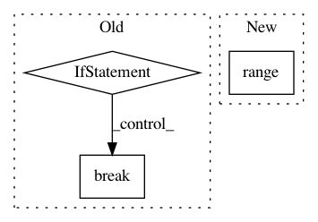

c99112162665aaf2667d1810d57982d0681f18e5,anago/callbacks.py,F1score,on_epoch_end,#F1score#Any#Any#,58
Before Change
label_true = []
label_pred = []
for i, (data, label) in enumerate(self.valid_batches):
if i == self.valid_steps:
break
y_true = label
y_true = np.argmax(y_true, -1)
sequence_lengths = data[-1] // shape of (batch_size, 1)
sequence_lengths = np.reshape(sequence_lengths, (-1,))
After Change
def on_epoch_end(self, epoch, logs={}):
label_true = []
label_pred = []
for i in range(self.valid_steps):
x_true, y_true = next(self.valid_batches)
y_true = np.argmax(y_true, -1)
sequence_lengths = x_true[-1] // shape of (batch_size, 1)
In pattern: SUPERPATTERN
Frequency: 3
Non-data size: 3
Instances
Project Name: Hironsan/anago
Commit Name: c99112162665aaf2667d1810d57982d0681f18e5
Time: 2018-03-06
Author: hiroki.nakayama.py@gmail.com
File Name: anago/callbacks.py
Class Name: F1score
Method Name: on_epoch_end
Project Name: dmlc/gluon-nlp
Commit Name: b61667d3daac5610cf40a7346efddb34476c059b
Time: 2019-06-18
Author: linhaibin.eric@gmail.com
File Name: scripts/bert/finetune_squad.py
Class Name:
Method Name: train
Project Name: asyml/texar
Commit Name: 2546dbadb426502d169aed5beb5933255b6f2208
Time: 2017-12-02
Author: zichaoy@cs.cmu.edu
File Name: examples/tsf/utils.py
Class Name:
Method Name: get_batches